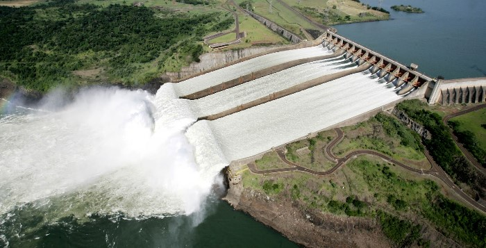
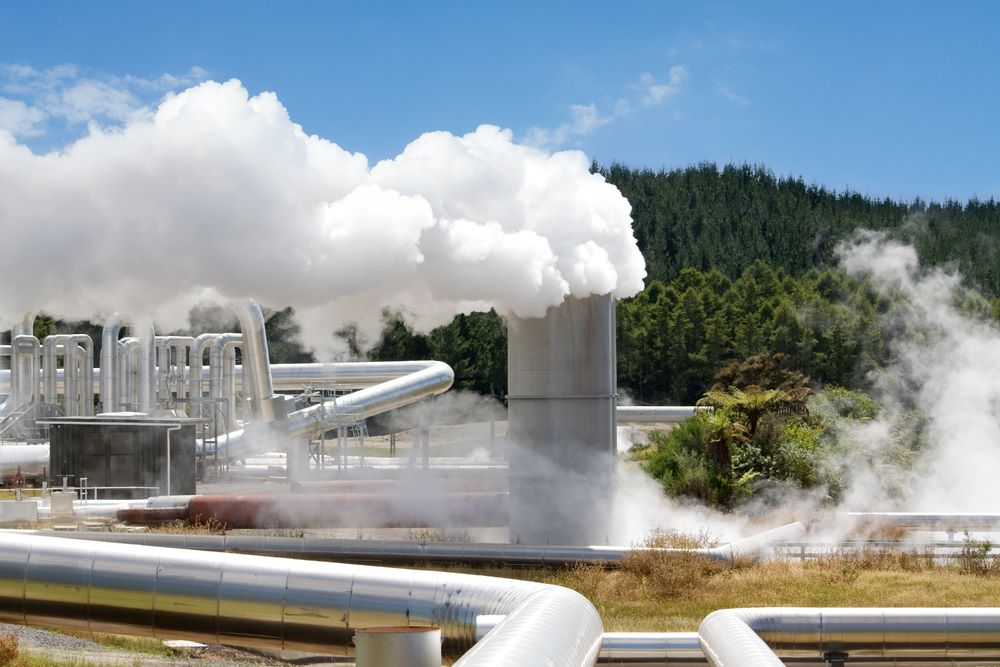
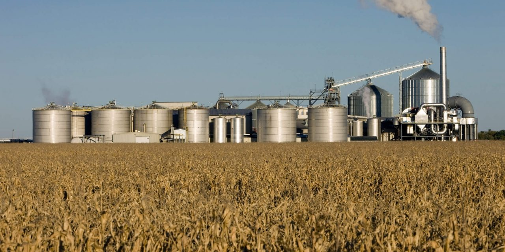

A energia elétrica certamente nunca foi tão requerida como agora, e certamente você
sabe que ela vem de enormes usinas geradoras de energia, prém os recursos que
alimentam algumas dessas usinas pode acabar, como o petroleo e o carvão mineral.
Energia Renovável é aquela provinda de recursos naturais e que são naturalmente
reabastecidos, como o Sol, Vento, marés entre outros.
Energia solar
Painel solar instalado em uma casa
O calor aqui no Brasil é puxado não é mesmo? Já se perguntou se esse calor pode ser
convertido em energia? E a resposta é sim! Tanto o calor quanto a luz proveniente de
nossa fornalha cósmica comum pode ser convertida em energia elétrica.
A força dos ventos é uma das fontes de energia mais antigas já utilizadas, todos
devem conheçer a clássica figura do moinho para moer trigo, porém em pleno século
XX é energia elétrica que queremos! o princípio é o mesmo: mas ao inés de moer
trigo, as pás estãao conectadas a um gerador elétrico
Energia hidrica

Usina de Itaipu
A força das aguas pode ser usada de várias formas, a mais comum é represar a água e
conectar a saida de agua a um gerador, a represa normalmente é um rio bloqueado, é
posivel fazer o mesmo no mar, usando as máres.
Energis Geotérmica

Usina geotermal
Você provavelmente já viu um vulcão, tamanha energia térmica também pode ser
utilizada. O vapor das fontes termais pode ser usada para movimentar turbinas
de um gerador, paises geologicamente ativos como a islandia podem usufrir des
Energia de Biomassa

Usina de biomassa
Este apesar des ser renovável não é ecológico, uma usina queima compostos organicos
para produzir enérgia. Acontece que esses compostos organicos pode ser madeira de
arvore e restos de cana por exemplo.